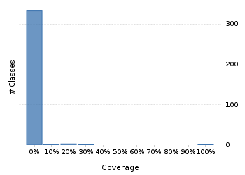
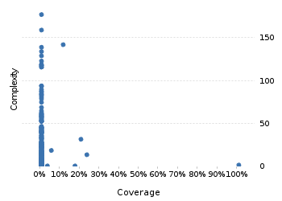

Clover Demo
Project overview
Code coverage 365 classes, 115 / 24,143 elements
0.00476328560.5%
Test results 0 / 0 tests 0 secs
No test results
No test results could be found. Please ensure that you have instrumented your unit tests correctly.
Code metrics
5,014
14,512
4,617
365
265
8
84,522
33,497
7,869
0.54
3.14
12.65
45.62
1.7
Class Coverage Distribution

Class Complexity

Coverage tree map
Generating Coverage Tree Map. Please wait...

Top 20 project risks
PeriodFormatterBuilder.FieldFormatter
AssembledChronology.Fields
DateTimeFormatterBuilder.TimeZoneOffset
DateTimeFieldType.StandardDateTimeFieldType
PeriodFormatterBuilder.Separator
DateTimeZoneBuilder.PrecalculatedZone
DateTimeFormatterBuilder.MatchingParser
DateTimeFormatterBuilder.NumberFormatter
DefaultNameProvider
DurationFieldType.StandardDurationFieldType
StringConverter
ConverterSet
ZoneInfoCompiler
DateTimeZone
ZoneInfoProvider
DateTimeFormatterBuilder.Fraction
FormatUtils
BasicGJChronology
DateTimeFormat
DateTimeFormatterBuilder.FixedNumber
Most complex packages
| 1. | 0.0082057570.8% |
org.joda.time 2815 |
| 2. | 0.00% |
org.joda.time.format 1543 |
| 3. | 0.00% |
org.joda.time.chrono 1286 |
| 4. | 0.00% |
org.joda.time.field 762 |
| 5. | 0.0231436842.3% |
org.joda.time.tz 568 |
Most complex classes
| 1. | 0.00% |
LocalDateTime 179 |
| 2. | 0.00% |
LocalDate 161 |
| 3. | 0.11641221511.6% |
DateTimeZone 144 |
| 4. | 0.00% |
DateTime 141 |
| 5. | 0.00% |
PeriodFormatterBuilder.FieldFormatter 136 |